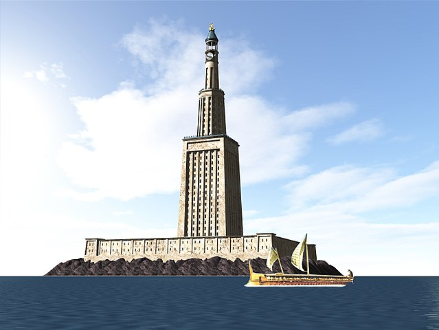
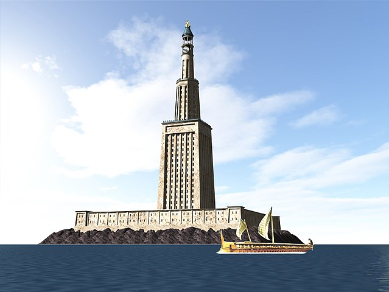
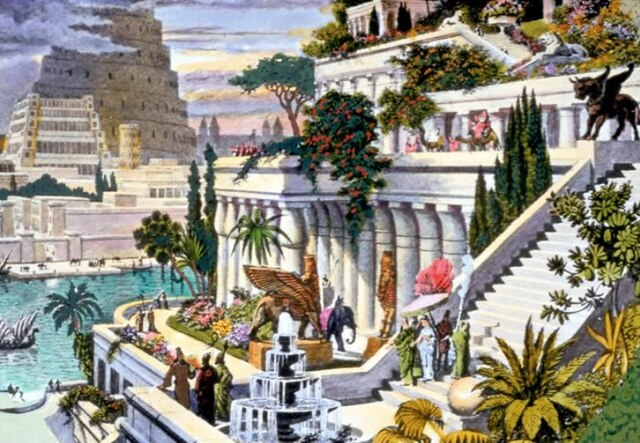
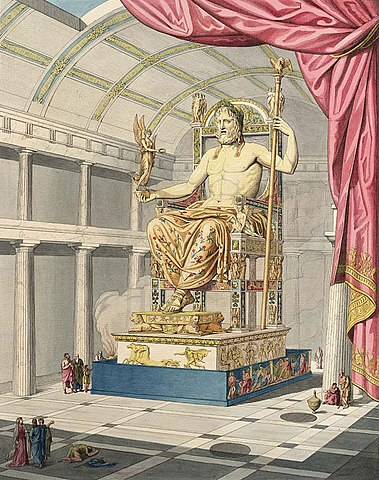
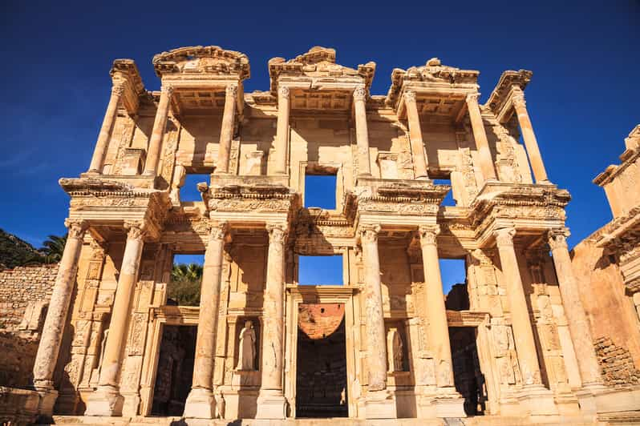
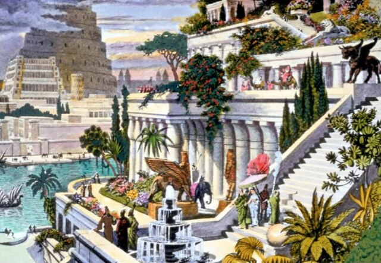
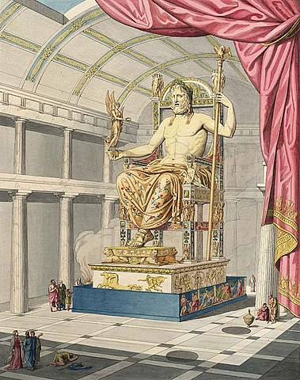
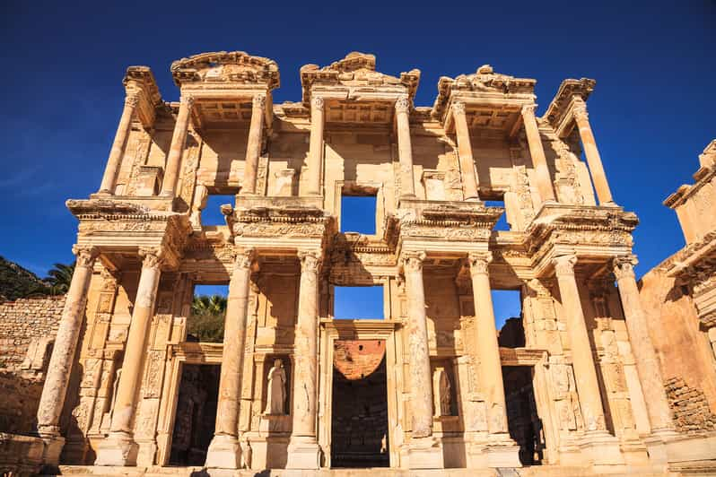

| Piramida Cheopsa |
Egipt |
Piramida znajdująca się w Egipcie na płaskowyżu w Gizie. Zbudowana w okresie Starego Państwa ok. 2560 lat p.n.e. z przeznaczeniem na grobowiec faraona Cheopsa. |
| Kolos Rodyjski |
Grecja |
Olbrzymich rozmiarów posąg Heliosa, wybudowany na wyspie Rodos przez Charesa z Lindos w latach 294–282 p.n.e. Wykonano go z brązu i ustawiono u wejścia do portu Rodos dla upamiętnienia niepowodzenia Demetriusza Poliorketesa, który w latach 305–304 p.n.e. oblegał miasto. Posąg miał 30–32 metry wysokości. |
| Latarnia morska na Faros |
Egipt |
Starożytna latarnia morska zbudowana około 280-279 p.n.e., ze względu na wielkość i wspaniałość architektonicznego ukształtowania uważana za jeden z siedmiu cudów świata starożytnego. |
| Mauzoleum w Halikarnasie |
Turcja |
Grobowiec Mauzolosa, perskiego satrapy Karii, wzniesiony ok. 350 p.n.e.. Jest uważany za jeden z siedmiu antycznych cudów świata (obecnie w Bodrum w południowo-zachodniej Turcji). Stanowi genezę określenia mauzoleum, które jest stosowane obecnie w odniesieniu do wielkich grobowców. |
| Wiszące ogrody Semiramidy |
Babilon ❲Irak❳ |
Jeden z siedmiu cudów świata starożytnego zbudowany na polecenie króla Nabuchodonozora II (604–562 p.n.e.), który podarował je swojej żonie, Amytis. |
| Posąg Zeusa w Olimpii |
Grecja |
Antyczny posąg Zeusa z V w. p.n.e. autorstwa Fidiasza ze świątyni Zeusa w Olimpii, zaliczany przez starożytnych Greków do siedmiu cudów świata. Dowiedz się więcej. |
| Świątynia Artemidy w Efezie |
Grecja |
Była to świątynia o wymiarach 130 m na 69 m, zbudowana na rozkaz króla Lidii Krezusa około 560 p.n.e. Najprawdopodobniej stanęła na miejscu wcześniejszej budowli zniszczonej podczas najazdu Kimmerów (zdaniem Pliniusza świątynia była dziewięć razy budowana i burzona). |

 

 




